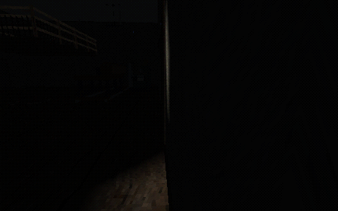
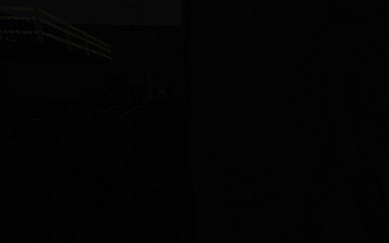
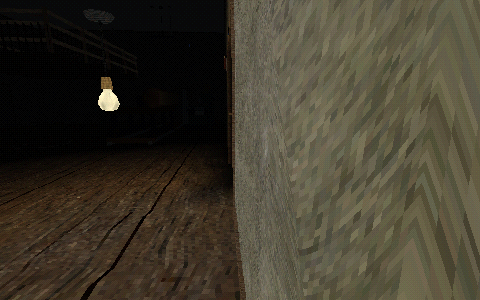
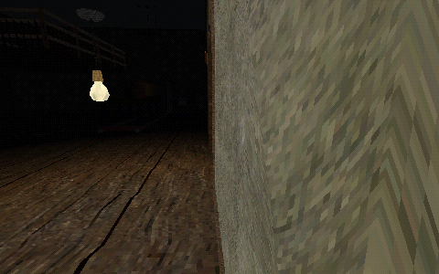

28 October 2026. Actual OpenGL diagnostic views on existing Blackpine geometry. A controlled exterior lamp exposed an endpoint-bias leak at grazing camera angles; the standalone helper test passed while the production light sampler still leaked. The corrected frame now matches the source-off frame exactly. A same-side interior lamp still illuminates the room.
No authored lamp, wall, floor or texture was moved. Synthetic-source diagnostics are not finished map art or full gameplay acceptance. Native triangle joins and all-room moving-camera review remain open.
Checks, metrics and hashes · Shared gallery




